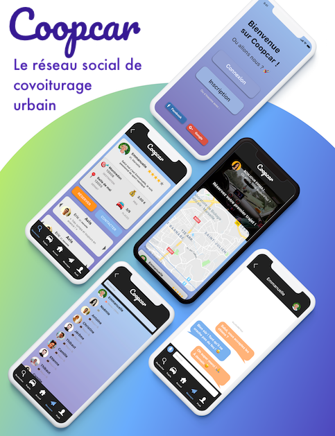

Application web


Description
Coopcar réinvente les réseaux sociaux de covoiturage intramuros en permettant au habitant de Marseille de se déplacer plus simplement.
Dans le cadre de ma formation j’ai étais en charge de la création d’un réseau social.
J’ai choisie de développer une application de covoiturage intramuros Marseillais.
Par consequent en m’inspirant des applications de covoiturage déjà existante j’ai choisie d’adaptée ce système a de courts trajets de type intramuros.
J’ai donc prototypé mon idée en utilisant Sketch et Adode XD, prototype que j'ai pu tester à l'aide de l'outil InVison.
Après retours suite à des test utilisateurs j'ai éfféctué plusieurs pivots, et itération de mon projet .
Notament concernat la barre de navigation et differentes disposition d'éléments que j'ai pu par la suite améliorer.
Il as fallu schématisé au mieux les informations presentent dans une publication, pour se faire j'ai donc intégrer une icône explicite decrivrant chaqu'une des informations.
Ce projet à était pour moi une énorme avancée dans le Webdesign et m'as également permis d'aborder differentes méthodologies de gestion de projet que j'ai eu la chance de mettre en
pratique lors d'ateliers
animée par Pierre Butin, designeur
travaillant avec Google.
Technologies & méthodes utilisées
- Angular
- Bootstrap
- JavaScript
- ExpressJs
- Sketch